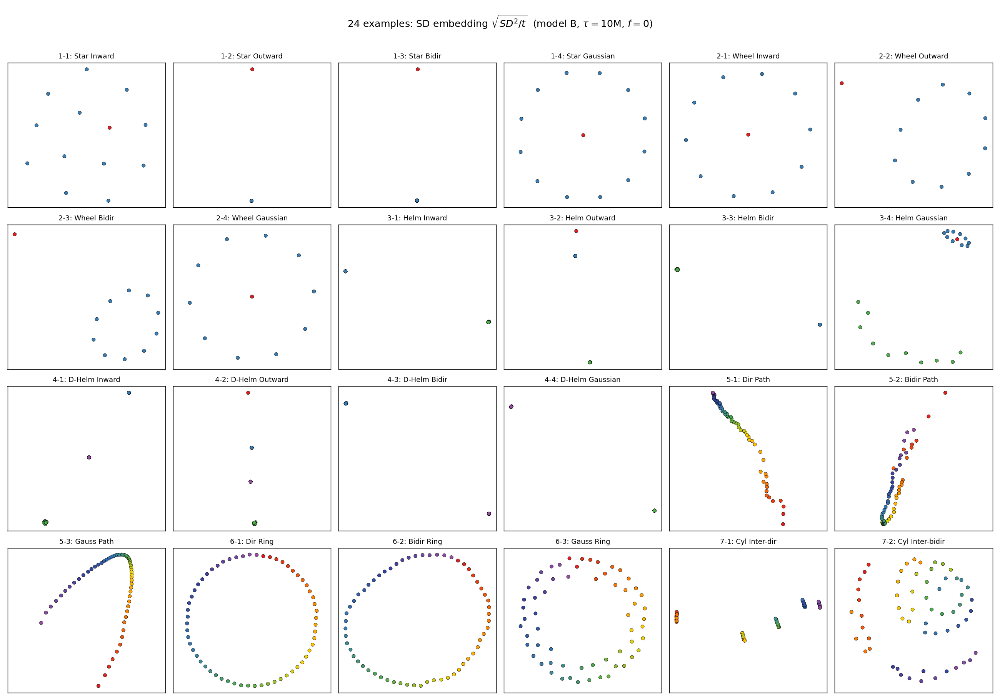
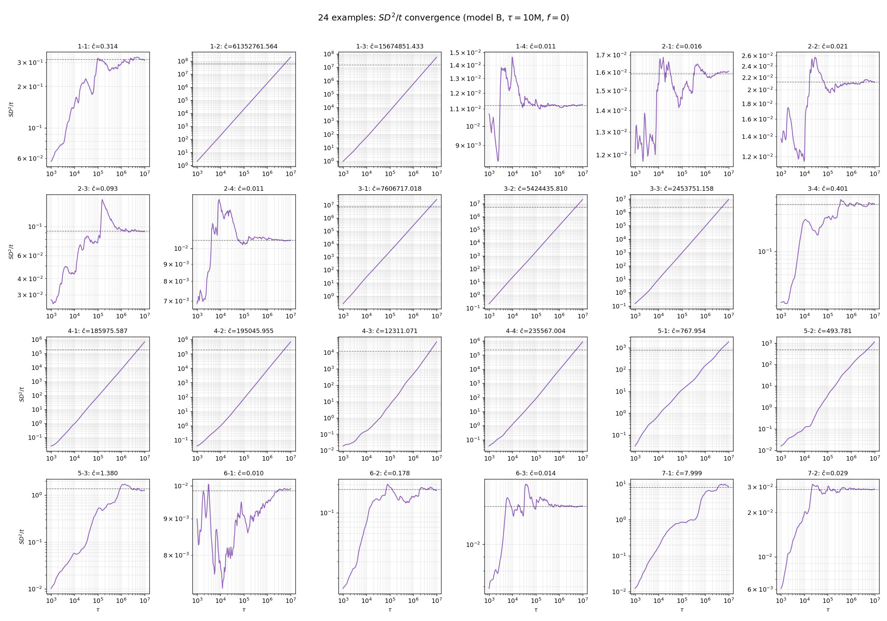
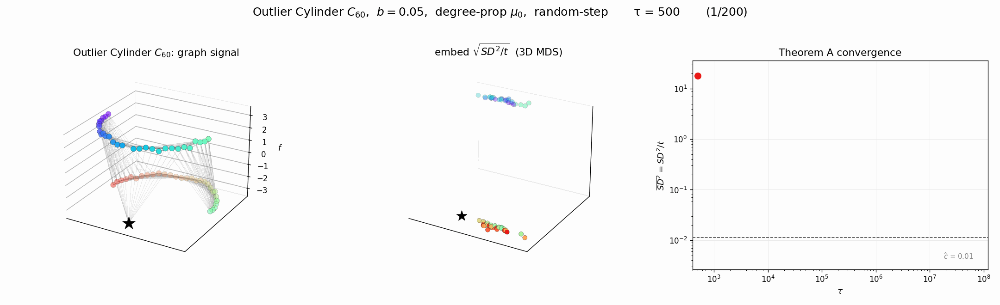
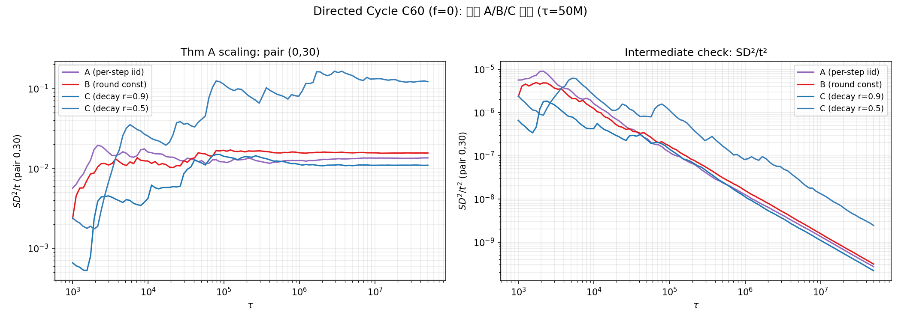

연구 ▷ HST ▷ Thm A, B의 실제 검증 (구)
각 노드의 장기 적립률을 \(\rho_i = \lim_{t\to\infty} \frac{1}{t}\sum_{s=1}^t \mathbf{1}\{X_s = v_i\}\) 라 하자. \(\rho\)가 균등한지 여부에 따라 SD의 스케일링이 달라진다.
- Thm A — Balanced (\(\rho_i = 1/n\)): \(SD^2/t \to c\) (유한 상수). 극한은 그래프-신호 상호작용을 반영.
- Thm B — Drift (\(\rho_i \neq \rho_j\)): \(SD^2/t \to \infty\). 대신 \(\frac{SD^2_{ij}(t)}{t^3} \to \frac{\bar{b}^2(\rho_i - \rho_j)^2}{3}\).
본 글은 두 부분으로 나뉜다. A 그래프 구조 검증 (\(f=0\), 24개 예제) 에서는 그래프 모양·엣지 방향이 regime 분류에 미치는 영향을, B 신호 변형 검증 (\(f \neq 0\), 3개 예제) 에서는 초기 신호의 효과를 본다.
A. 그래프 구조 검증 (\(f = 0\))
「그래프 도메인에서의 거리」 에서 정의한 24개 테스트 그래프 (7 모양 × 변형) 에 대해 \(f = 0\) 으로 두고 HST 시뮬을 수행했다. 예제 네이밍은 거리 블로그와 동일 (1-1 ~ 7-2). 시뮬 설정: \(b = 0.05\), \(T_{\max} = 20\), \(\tau = 10^7\), seed=42, 모델 B random-step variant, degree-prop \(\mu_0\).
- 모양 1 — Star (\(n=13\)): 1-1 Inward / 1-2 Outward / 1-3 Bidir / 1-4 Gaussian - 모양 2 — Wheel (\(n=11\)): 4변형 - 모양 3 — Helm (\(n=21\)): 4변형 - 모양 4 — Double Helm (\(n=31\)): 4변형 - 모양 5 — Path (\(n=60\)): 5-1 Directed / 5-2 Bidir / 5-3 Gaussian - 모양 6 — Ring (\(n=60\)): 3변형 - 모양 7 — Cylinder (\(n=60\)): 7-1 Inter-dir / 7-2 Inter-bidir
A.1 SD 임베딩
각 그래프에서 시뮬 후 \(\sqrt{SD^2_{ij}/\tau}\) 의 2D MDS 임베딩.

A.2 \(SD^2/t\) 수렴 곡선 (log-log)
같은 24 예제의 \(\overline{SD^2/t}\) (off-diagonal 평균) 를 \(\tau\) 에 대해 log-log plot. 수렴하면 수평선, 발산하면 양의 기울기.

A.3 Regime 분류
| 예제 | \(\hat c\) | 예제 | \(\hat c\) | 예제 | \(\hat c\) | 예제 | \(\hat c\) |
|---|---|---|---|---|---|---|---|
| 1-1 Star Inward | \(0.31\) ⚠ | 2-1 Wheel In | \(0.016\) ✓ | 3-1 Helm In | \(7.6\times10^{6}\) ❌ | 4-1 D-Helm In | \(1.9\times10^{5}\) ❌ |
| 1-2 Star Outward | \(6.1\times10^{7}\) ❌ | 2-2 Wheel Out | \(0.021\) ✓ | 3-2 Helm Out | \(5.4\times10^{6}\) ❌ | 4-2 D-Helm Out | \(2.0\times10^{5}\) ❌ |
| 1-3 Star Bidir | \(1.6\times10^{7}\) ❌ | 2-3 Wheel Bidir | \(0.093\) ✓ | 3-3 Helm Bidir | \(2.5\times10^{6}\) ❌ | 4-3 D-Helm Bidir | \(1.2\times10^{4}\) ❌ |
| 1-4 Star Gauss | \(0.011\) ✓ | 2-4 Wheel Gauss | \(0.011\) ✓ | 3-4 Helm Gauss | \(0.40\) ⚠ | 4-4 D-Helm Gauss | \(2.4\times10^{5}\) ❌ |
| 5-1 Dir Path | \(768\) ❌ | 6-1 Dir Ring | \(0.0098\) ✓ | 7-1 Cyl Inter-dir | \(8.0\) ⚠ | ||
| 5-2 Bidir Path | \(494\) ❌ | 6-2 Bidir Ring | \(0.18\) ✓ | 7-2 Cyl Inter-bidir | \(0.029\) ✓ | ||
| 5-3 Gauss Path | \(1.4\) ⚠ | 6-3 Gauss Ring | \(0.014\) ✓ |
- ✓ = balanced (Thm A 성립). - ❌ = drift (Thm B, \(SD^2/t\) 발산하니 실제는 \(SD^2/t^3\) 수렴). - ⚠ = 중간/약발산.
- Wheel 의 4 변형 모두 balanced: outer cycle 이 차수 격차를 완화해서 \(\rho_i \approx 1/n\). 엣지 방향(In/Out/Bidir)과 가중치 종류(Gaussian)와 무관.
- Star/Helm/D-Helm 의 directed/bidir 변형은 모두 drift: hub 가 reset 을 집중적으로 받아 \(\rho_{\text{hub}} \gg \rho_{\text{leaf}}\).
- 6-1 Directed Ring: doubly stochastic 이라 비대칭임에도 \(\rho_i = 1/n\) → balanced. 「비대칭 그래프에서도 Thm A」 라는 비자명한 결론.
- Gaussian kernel 은 정규 그래프(Wheel, Ring)에서 차수 격차를 완화하지만, hub-leaf 격차가 큰 그래프(Helm/D-Helm)에서는 충분치 않다.
- Cylinder 7-1 (inter-dir) 은 ring 사이 단방향 결합으로 ring별 적립률 격차 → 약한 drift. 7-2 (inter-bidir) 은 정규 → balanced.
B. 신호 변형 검증 (\(f \neq 0\))
§A의 그래프 중 일부 위에 초기 신호를 얹어 Thm A 가 신호-그래프 상호작용을 어떻게 반영하는지 본다. 모두 balanced regime 그래프 위에서.
B.1 Parity Cycle \(C_{60}\) — \(f_i = (-1)^i\)
§A 6-2 Bidir Ring 과 동일한 양방향 cycle. 신호는 Nyquist 주파수. 이웃끼리 신호가 반대이므로 block 이 자주 발생한다.

B.2 Directed Cycle \(C_{60}\) — \(f = \pm 1\)
§A 6-1 Dir Ring 위에 반원 경계 \(\pm 1\) 신호. \(f \neq 0\) 이면 매 시점 \((h_i - h_j)^2\) 에 초기 신호 차이 \((f_i - f_j)^2\) 가 상수항으로 누적되어 \(SD^2/t\) 가 큰 값에서 수렴 (scaling 자체는 Thm A 그대로).

B.3 Outlier Cylinder
§A 7-2 Cyl Inter-bidir 와 비슷한 cylinder 구조 (Gaussian kernel, 위=-3, 아래=+3) 에서 +3 그룹 정중앙 한 노드만 -3 으로 flip. 정규 → balanced. 국소적 outlier 가 SD 임베딩에서 어떻게 분리되는지.

결국 두 regime 모두 \(\tau \to \infty\) 에서 초기 신호 \(\mathbf{y}\) 는 씻겨나간다. 차이는 어떤 그래프 정보가 남느냐: balanced 는 flow/block dynamics 의 세밀한 구조, drift 는 단순히 적립률 격차.
Appendix: random-step variant 모델 정의 민감도
본문의 실제 검증은 random-step variant의 모델 A (매 step별 \(b'_s \sim \text{Unif}(0,b)\) 추첨, \(\mathbb{E}[b'] = b/2\)) 가정 위에서 수행되었다. 그런데 “한 라운드 동안 \(b'\)이 step 수만큼인지, 라운드당 1개인지”에 대한 정의가 코드와 직관 사이에 모호할 수 있다. 후보 모델을 다음과 같이 정리한다.
| 모델 | \(b'\) 추첨 시점 | 라운드 내 적립 |
|---|---|---|
| A (코드/이론) | 매 step | \(b'_s\) 매번 새로 추첨 |
| B (round-const) | 라운드 시작 시 1회 | 라운드 동안 같은 \(b'\) |
| C (감쇠) | 라운드 시작 시 1회 | step \(k\)에서 \(b' \cdot r^k\) (\(r<1\)) |
추가예제 6 (Directed Cycle \(C_{60}\), \(f=0\), \(b=0.05\), \(T_{\max}=20\), \(\tau=50\text{M}\), seed=42) 으로 네 가지 모델을 동일 조건에서 비교했다.

| 모델 | 정의 | \(SD^2/t\) (pair 0,30) | \(SD^2/t^2\) | 비고 |
|---|---|---|---|---|
| A | per-step iid | 0.0135 | \(2.7\times 10^{-10}\) | 본문 기준 |
| B | round-const | 0.0155 | \(3.1\times 10^{-10}\) | +15% vs A |
| C, \(r=0.9\) | 점진 감쇠 | 0.0109 | \(2.2\times 10^{-10}\) | \(-19\%\) vs A |
| C, \(r=0.5\) | 급격 감쇠 | 0.1214 | \(2.4\times 10^{-9}\) | 큰 폭 변동 |
관찰
Thm A 스케일링은 모델 정의 무관하게 성립한다. 네 모델 모두 \(SD^2/t\)는 일정값으로 수렴하고 \(SD^2/t^2\)는 \(0\)으로 감소한다. 따라서 추가예제 6의 정성적 결론 (“비대칭 그래프에서도 Thm A 성립”) 은 모델 선택에 robust 하다.
\(c\) 값의 절댓값은 모델에 민감하다. A 대비 B는 \(+15\%\), C(\(r=0.9\))는 \(-19\%\), C(\(r=0.5\))는 \(\sim 9\)배 증폭. 모델 C 의 급감쇠(\(r=0.5\))는 매 라운드의 첫 step에 적립이 집중되어 노드별 높이 격차가 크게 벌어지는 효과 때문이다.
따라서 본문의 \(\hat c \approx 0.0136\) 같은 수치는 모델 A 가정에 종속적이지만, “수렴한다”는 정성은 모델 정의의 자유도에 영향받지 않는다.
비고
이 부록은 모델 A/B/C 가운데 어느 것이 “맞는” 정의인지 결정하지 않는다. 그 판단은 random-step variant 의 물리적 직관, 기존 증명들의 호환성, 그리고 다른 그래프 (Helm, Wheel, Star) 에서의 동일 비교가 필요하다.